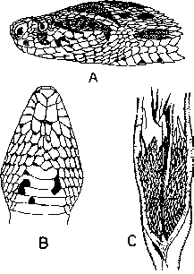

|
Digitized Inventory of Animal Resources: Reptilia ( Snakes ) Principal Investigator: Dr. R. J. B Alfred, Co-Investigator: Dr. Rama Krishna, Contributed by:
Dr. R.C.Sharma |
Vipera russelli (Shaw 1797)
Taxonomic
Details
----- Scientific Name
----- Classification
----- Synonyms
----- Common Names
Other
Biological Details
----- Habit and
Habitat
----- Distribution
---------- Extent of
Occurrence
---------- Area of occurrence
---------- Altitude
---------- Population
-----
Conservation Status
-----
Diagnostic
Features
-----
Breeding system
Miscellaneous
Information
Literature
Family . Viperidae Bonaparte 1840
The family includes the snakes with the following characters : The maxilla is greatly shortened but become quite deep, bearing a single, large, erectile, tube like poison fang, which is greatly developed and carry poison; palatine, pterygoid and dentary bones are having much smaller backwardly recurved teeth; the channel for the conveyance of the venom is generally completely closed so that no external grove is visible on the tooth, when at rest the fangs lie horizontally in the mouth, and in no other position in fact could it be closed, usually there are two equally developed fangs, both of them function in biting. The erect-position is brought about by a forward movement of the other bones forming the palato-maxillary arch, the maxilla revolving like a hinge on the anterior end of the prefrontal. The quadrate is long and slender and extends backwards in an almost horizontal plane from the supratemporal. The coronoid is not present in the lower jaw. The long ectopterygoid is flexibly articulated with the maxilla and the pterygoid rendering a rotating movement to maxilla into a vertical position when the snake strikes. The pterygoid is also movably attached to the very long quadrate. The anterior skull bones are flexibly movable on the cranium; the premaxilla and maxilla are separate and same is the case with nasal and prefrontal bones; the supratemporal is generally freely movable on
the cranium, while the long quadrate slants backward and this increase the gape of the jaws. There are no vestiges on the pelvis or hind-limb. Eyes are moderately large. The head is quite distinct from the neck. The dorsal scales are small, more or less rhomboidal in shape and overlapping; the ventral scales are transversely enlarged to form a single row and some times a double, especially in the tail region; the tail is of moderate length. In pit-vipers there is a deep pit between the eye and the nostril, which is heat sensitive. These snakes are viviparous and found in all sort of terrestrial habitats like forests, rocks, grainy areas, on trees and lead a effective arboreal life; few are mainly distributed in the old world, but are not available in Madagascar and Australia. Rattle snakes (Crotalinae) are found in North and South America and also in southern Asia. Family includes 14 genera and slightly more than 150 species.
Genus . Vipera Laurenti 1768.
This genus is generally palearctic and includes viviparous, deadly solenoglyphous (with large, hollow, fangs on maxilla-tip) snakes, distributed in complete Eurasia, the Indo-Australian Archipelago; ranging widely into tropical areas of Asia to Taiwan and Java; well distributed in North and Tropical Africa, About 10 species are available in Indian region.
The main characters : Head is distinct from the neck, covered with small scales or a small frontal and parietal shields are present; eyes are with vertically elliptical pupil, eyes are not in contact with the labials; there is no pit between the eye and the nostril; more than 3 head shields (scales) across top of head between the two eyes; nostril is lateral in position and pierced into a large nasal shield; a naso-rostral shield is present between the nasal and the rostral or partly united with the nasal; dorsal body scales are keeled, keels without serration, in straight rows of 19-33 scales round the body; ventral shields are rounded and smooth; sub-caudal shields are divided; tail is short.
Scientific Name : Vipera russelli (Shaw 1797)
Family : Viperidae
Classification: Genus . Vipera Laurenti 1768.
Synonyms:
Common Names: russell's
viper, daboia, tic-polonga
HABIT & HABITAT Inhabits the plains, foothills and uplands up to 2500 meters, grasslands, cultivated fields, bushes near the marshy areas; these are generally nocturnal, sluggish, ill tempered. Food comprises small rodents and frogs. Young ones are born in June, the number generally remains between 20-25 in a single litre and they measure between 250-300 mm.
Altitude:
Conservation status: Though the snake is available every where in its range, but no where common, the species is abundant in some areas, rare or missing in others.
Length : Besides the characters given under genus, the species is characterized by having an obtuse snout with prominent canthus rostrails; nostril is very large, pierced in nasal.
Body : hemipenis extends up to 10th caudal plate, forked opposite the 2nd and 3rd caudal plate, calyculate in distal half, bearing spines in the proximal portion, the largest spines are present near and around the fork.
Scales : Scales in 25 to 29 : 27 : 33 : 21 to 23 rows, which are quite smooth; ventral shields in males and females are from 153-180; sub caudal shields in males and females are 41-64 and are paired;
Colouration : Dorsal colouration is lighten to sandy, with a vertebral series of 23-29 large, oval, chestnut spots, with black or dark brown margins narrowly edged with cream colour, these sport generally fuse in most of the individuals; on lateral aspects also a series of similar spots are present, but these are comparatively smaller than the vertebral spots; under side of head is with two large dark spots; a light V-shaped mark with its apex on top of snout; labials and lateral aspect of snout spotted with brown and cream colour; ventrum is whitish with a pink tinge and is with black semilunar spots; chin and throat are whitish, but in many individuals the scales of this area are tipped with black.
Breeding Biology : Back to Top

Vipera russlli (Shaw)
: A. Dorsal view of head B. Ventral view of head C. Hemipenis